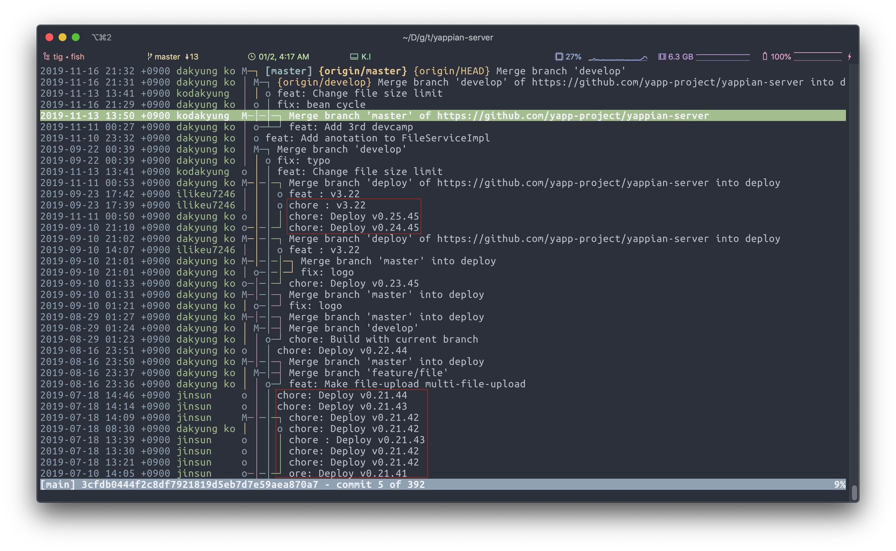
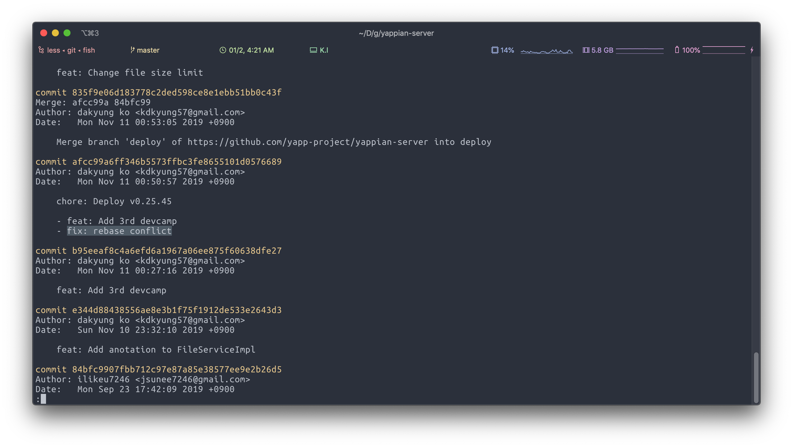
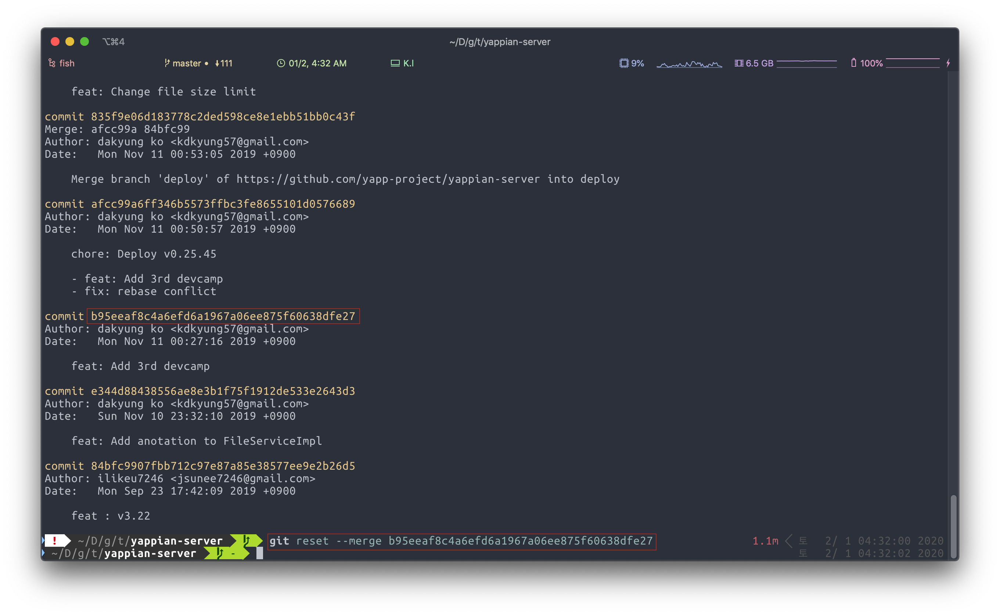
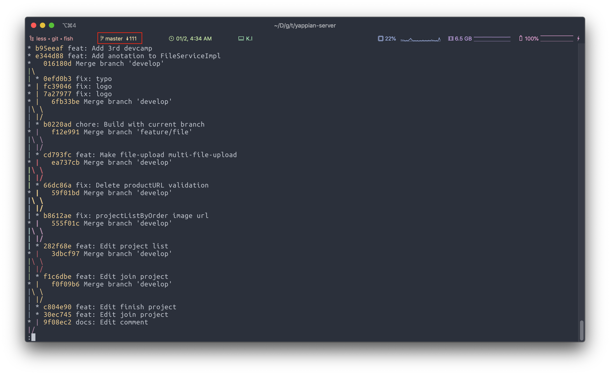
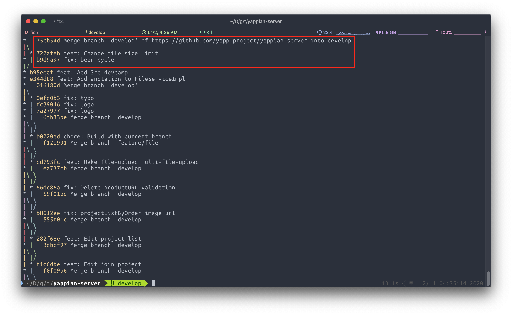
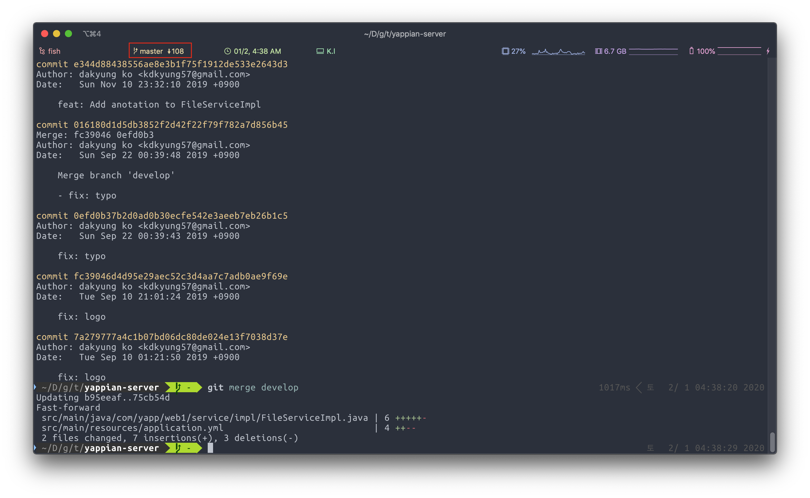
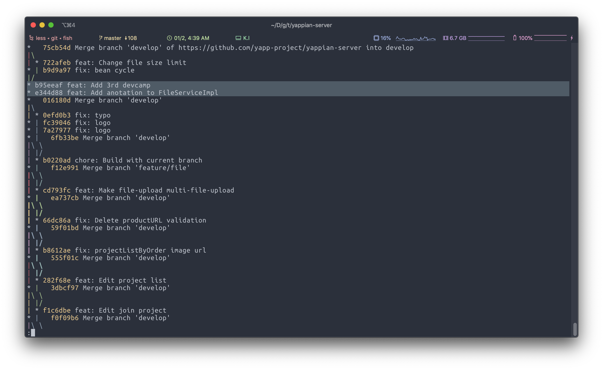
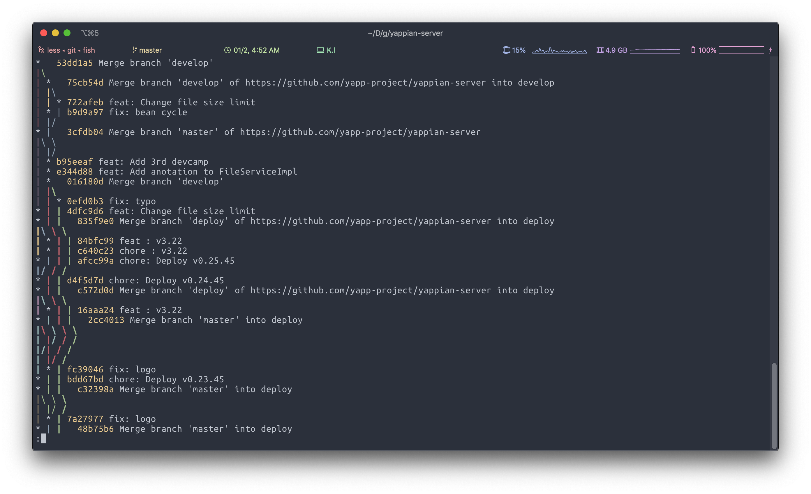

<!DOCTYPE html>
<html>
<head><meta name="generator" content="Hexo 3.9.0">
    <meta charset="utf-8">

    

    
    <title>git 커밋 중간에 잘못된 merge 되돌리기 | Jade&#39;s Blog</title>
    
    <meta name="viewport" content="width=device-width, initial-scale=1, maximum-scale=1">
    
        <meta name="keywords" content="Troubleshooting,Git">
    
    <meta name="description" content="어느날 오랜만에 커밋을 보니까,master 브랜치가 뭔가 잘못되어 있었다.">
<meta name="keywords" content="Troubleshooting,Git">
<meta property="og:type" content="article">
<meta property="og:title" content="git 커밋 중간에 잘못된 merge 되돌리기">
<meta property="og:url" content="https://j2de.github.io/2020/02/01/reverting-invalid-git-merge/index.html">
<meta property="og:site_name" content="Jade&#39;s Blog">
<meta property="og:description" content="어느날 오랜만에 커밋을 보니까,master 브랜치가 뭔가 잘못되어 있었다.">
<meta property="og:locale" content="en">
<meta property="og:image" content="https://j2de.github.io/2020/02/01/reverting-invalid-git-merge/01.png">
<meta property="og:updated_time" content="2021-03-03T12:27:02.024Z">
<meta name="twitter:card" content="summary">
<meta name="twitter:title" content="git 커밋 중간에 잘못된 merge 되돌리기">
<meta name="twitter:description" content="어느날 오랜만에 커밋을 보니까,master 브랜치가 뭔가 잘못되어 있었다.">
<meta name="twitter:image" content="https://j2de.github.io/2020/02/01/reverting-invalid-git-merge/01.png">
    
    <link rel="canonical" href="https://j2de.github.io/2020/02/01/reverting-invalid-git-merge/">

    
        <link rel="alternate" href="https://j2de.github.io/feed.xml" title="Jade&#39;s Blog" type="application/atom+xml">
    

    
        <link rel="icon" href="/images/favicions/floppy_disk.ico">
    

    <link rel="stylesheet" href="/libs/font-awesome/css/font-awesome.min.css">
    <link rel="stylesheet" href="/libs/titillium-web/styles.css">
    <link rel="stylesheet" href="/libs/source-code-pro/styles.css">

    <link rel="stylesheet" href="/css/style.css">

    <script src="/libs/jquery/3.3.1/jquery.min.js"></script>
    
    
        <link rel="stylesheet" href="/libs/lightgallery/css/lightgallery.min.css">
    
    
        <link rel="stylesheet" href="/libs/justified-gallery/justifiedGallery.min.css">
    
    
        <script type="text/javascript">
(function(i,s,o,g,r,a,m) {i['GoogleAnalyticsObject']=r;i[r]=i[r]||function() {
(i[r].q=i[r].q||[]).push(arguments)},i[r].l=1*new Date();a=s.createElement(o),
m=s.getElementsByTagName(o)[0];a.async=1;a.src=g;m.parentNode.insertBefore(a,m)
})(window,document,'script','//www.google-analytics.com/analytics.js','ga');

ga('create', 'UA-146445480-1', 'auto');
ga('send', 'pageview');

</script>

    
    


    <link rel="stylesheet" href="https://cdn.rawgit.com/innks/NanumSquareRound/master/nanumsquareround.css">
    <meta name="naver-site-verification" content="075c9fa2134f2ba5473ea49c60f51a20afcdb2bf">
</head>
</html>
<body>
    <div id="wrap">
        <header id="header">
    <div id="header-outer" class="outer">
        <div class="container">
            <div class="container-inner">
                <div id="header-title">
                    <h1 class="logo-wrap">
                        <a href="/" class="logo"></a>
                    </h1>
                    
                        <h2 class="subtitle-wrap">
                            <p class="subtitle">An archive for daily discovery</p>
                        </h2>
                    
                </div>
                <div id="header-inner" class="nav-container">
                    <a id="main-nav-toggle" class="nav-icon fa fa-bars"></a>
                    <div class="nav-container-inner">
                        <ul id="main-nav">
                            
                                <li class="main-nav-list-item">
                                    <a class="main-nav-list-link" href="/">Home</a>
                                </li>
                            
                                        <ul class="main-nav-list"><li class="main-nav-list-item"><a class="main-nav-list-link" href="/categories/cs/">CS</a><ul class="main-nav-list-child"><li class="main-nav-list-item"><a class="main-nav-list-link" href="/categories/cs/database/">DataBase</a></li><li class="main-nav-list-item"><a class="main-nav-list-link" href="/categories/cs/os/">OS</a></li></ul></li><li class="main-nav-list-item"><a class="main-nav-list-link" href="/categories/programming/">Programming</a><ul class="main-nav-list-child"><li class="main-nav-list-item"><a class="main-nav-list-link" href="/categories/programming/common/">Common</a></li><li class="main-nav-list-item"><a class="main-nav-list-link" href="/categories/programming/java/">Java</a></li><li class="main-nav-list-item"><a class="main-nav-list-link" href="/categories/programming/javascript/">Javascript</a></li></ul></li><li class="main-nav-list-item"><a class="main-nav-list-link" href="/categories/server/">Server</a><ul class="main-nav-list-child"><li class="main-nav-list-item"><a class="main-nav-list-link" href="/categories/server/netty/">Netty</a></li><li class="main-nav-list-item"><a class="main-nav-list-link" href="/categories/server/orm/">ORM</a></li><li class="main-nav-list-item"><a class="main-nav-list-link" href="/categories/server/spring/">Spring</a></li><li class="main-nav-list-item"><a class="main-nav-list-link" href="/categories/server/test/">Test</a></li></ul></li><li class="main-nav-list-item"><a class="main-nav-list-link" href="/categories/system/">System</a><ul class="main-nav-list-child"><li class="main-nav-list-item"><a class="main-nav-list-link" href="/categories/system/docker/">Docker</a></li><li class="main-nav-list-item"><a class="main-nav-list-link" href="/categories/system/shell/">Shell</a></li></ul></li><li class="main-nav-list-item"><a class="main-nav-list-link" href="/categories/think/">Think</a></li><li class="main-nav-list-item"><a class="main-nav-list-link" href="/categories/troubleshooting/">Troubleshooting</a></li><li class="main-nav-list-item"><a class="main-nav-list-link" href="/categories/web/">Web</a></li></ul>
                                    
                                <li class="main-nav-list-item">
                                    <a class="main-nav-list-link" href="/about/index.html">About</a>
                                </li>
                            
                        </ul>
                        <nav id="sub-nav">
                            <div id="search-form-wrap">

    <form class="search-form">
        <input type="text" class="ins-search-input search-form-input" placeholder="Search">
        <button type="submit" class="search-form-submit"></button>
    </form>
    <div class="ins-search">
    <div class="ins-search-mask"></div>
    <div class="ins-search-container">
        <div class="ins-input-wrapper">
            <input type="text" class="ins-search-input" placeholder="Type something...">
            <span class="ins-close ins-selectable"><i class="fa fa-times-circle"></i></span>
        </div>
        <div class="ins-section-wrapper">
            <div class="ins-section-container"></div>
        </div>
    </div>
</div>
<script>
(function (window) {
    var INSIGHT_CONFIG = {
        TRANSLATION: {
            POSTS: 'Posts',
            PAGES: 'Pages',
            CATEGORIES: 'Categories',
            TAGS: 'Tags',
            UNTITLED: '(Untitled)',
        },
        ROOT_URL: '/',
        CONTENT_URL: '/content.json',
    };
    window.INSIGHT_CONFIG = INSIGHT_CONFIG;
})(window);
</script>
<script src="/js/insight.js"></script>

</div>
                        </nav>
                    </div>
                </div>
            </div>
        </div>
    </div>
</header>
        <div class="container">
            <div class="main-body container-inner">
                <div class="main-body-inner">
                    <section id="main">
                        <div class="main-body-header">
    <h1 class="header">
    
    <a class="page-title-link" href="/categories/troubleshooting/">Troubleshooting</a>
    </h1>
</div>

                        <div class="main-body-content">
                            <article id="troubleshooting-reverting-invalid-git-merge" class="article article-single article-type-troubleshooting" itemscope itemprop="blogPost">
    <div class="article-inner">
        
            <header class="article-header">
                
    
        <h1 class="article-title" itemprop="name">
        git 커밋 중간에 잘못된 merge 되돌리기
        </h1>
    

            </header>
        
        
            <div class="article-meta">
                
    <div class="article-date">
        <a href="/2020/02/01/reverting-invalid-git-merge/" class="article-date">
            <time datetime="2020-02-01T14:41:26.000Z" itemprop="datePublished">2020-02-01</time>
        </a>
    </div>

		

                
    <div class="article-tag">
        <i class="fa fa-tag"></i>
        <a class="tag-link" href="/tags/git/">Git</a>, <a class="tag-link" href="/tags/troubleshooting/">Troubleshooting</a>
    </div>

            </div>
        
        
        <div class="article-entry" itemprop="articleBody">
            <p>어느날 오랜만에 커밋을 보니까,<br><code>master</code> 브랜치가 뭔가 잘못되어 있었다.</p>
<a id="more"></a>

<p></p>
<blockquote>
<p>deploy 브랜치에 있는 배포용 커밋이 master 브랜치에 있는 상황</p>
</blockquote>
<p>커밋 로그를 추적해보다가 <code>rebase conflict</code>를 해결하다 병합에 문제가 생긴걸 알았다.<br>(merge를 잘못해서 생긴것 일것으로 추측, 실수로 deploy 브랜치에서 작업 후 merge를 시도했다던지..)</p>
<blockquote>
<p>rebase는 커밋 이력이 남지 않아서, merge 실수를 일일히 찾아야한다.</p>
</blockquote>
<p></p>
<p>과거의 내가 <code>fix: rebase conflict</code>라고 남겨놓아서 그나마 쉽게 찾을 수 있었다.</p>
<blockquote>
<p>오늘의 교훈 : 커밋 메세지를 잘남기자..</p>
</blockquote>
<p>아무튼 이걸 해결하려면 중간에 <code>잘못 머지한 이력</code>을 지우고 원래대로 <code>개발 완료한 커밋 내역</code>으로 돌려야한다.</p>
<p>검색해보니 <code>merge</code>를 되돌리기 위해서는 <code>reset</code>과 <code>revert</code>를 사용한다.<br><code>revert --mainline</code> 옵션으로 시도했지만 <code>revert</code>는 기존 커밋 내역을 보존하고 추가 커밋을 덧붙이는거라 지금 내 상황에 맞지 않았다.</p>
<p>만약 팀 프로젝트와 같이 <code>commit id</code>가 중요하면 <code>reset</code>과 같이 <strong>commit id가 변경</strong>되는 명령어를 쉽게 쓸 수 없었겠지만 상황상 <code>reset</code>으로 되돌리기를 시도했다.</p>
<p></p>
<p><code>git reset --merge [COMMIT_ID]</code> 적용 후 deploy 관련 커밋이 깔끔하게 삭제 되어 git graph가 깨끗해졌다. (기본 mixed 옵션으로 적용)</p>
<p></p>
<p>이제 문제는 원래 개발했던 내용을 되돌려놓는 것</p>
<p>문제가 생겼던 프로젝트는 기존에 <code>git flow</code> 방식을 차용해서 커밋했기에 <code>develop branch</code>에<br>동작이 보증된 개발 완료된 코드들이 남아있었다.<br><code>master branch</code>는 <code>mixed option</code>으로 <code>reset</code> 했기에 stage가 깨끗해서 <code>develop</code>을 바로 master로 <code>merge</code>할 수 있다.</p>
<blockquote>
<p>만약 soft 옵션으로 reset 했다면 남아있는 파일을 모두 지우고 시도한다.</p>
</blockquote>
<blockquote>
<p>만약 branch 관리를 하지 않아 branch가 꼬여있었다면 이 방법으로 해결하지 못했을지도..</p>
</blockquote>
<p></p>
<p></p>
<p></p>
<p></p>
<p>이후 확인해보면 이력이 깨끗하게 정리된 것을 확인할 수 있다.</p>
<p>최종적으로 <code>master</code>에 푸시한다.<br><code>reset</code>으로 커밋 내역을 변경했기 때문에 당연히 <code>-f</code> 로 강제 push를 한다<br>강제 <code>push</code>는 브랜치에 protected가 걸려있으면 할 수 없다.<br>따라서 해당 방법은 아무래도 실무에서 여러가지 제약이 있으면 적용하기는 어려울 것 같고<br>실무에서는 잘못 merge시 revert를 통해 우회하는 방식을 사용해야할 것 같다.</p>
<p>git reset 후 변경 내역에 대해 새로 커밋을 하는 경우는 commit id가 변경되지만<br>기존에 있는 브랜치에서 병합했기 때문에 커밋 아이디는 변경되지 않았다.</p>
<h3 id="오늘-알게된-것"><a href="#오늘-알게된-것" class="headerlink" title="오늘 알게된 것."></a>오늘 알게된 것.</h3><ul>
<li>커밋을 잘 남기자.<ul>
<li>섣불리 rebase하지 말고 merge로 merge 이력을 남기자.</li>
</ul>
</li>
<li>브랜치를 잘 나눠서 사용하자</li>
</ul>
<h3 id="참고한-링크"><a href="#참고한-링크" class="headerlink" title="참고한 링크"></a>참고한 링크</h3><ul>
<li><a href="https://www.tuwlab.com/ece/22223" rel="external nofollow noopener noreferrer" target="_blank">https://www.tuwlab.com/ece/22223</a></li>
<li><a href="https://victorydntmd.tistory.com/79" rel="external nofollow noopener noreferrer" target="_blank">https://victorydntmd.tistory.com/79</a></li>
<li><a href="https://nesoy.github.io/articles/2018-07/Git-Revert" rel="external nofollow noopener noreferrer" target="_blank">https://nesoy.github.io/articles/2018-07/Git-Revert</a></li>
</ul>

        </div>
        <footer class="article-footer">
            


    <a data-url="https://j2de.github.io/2020/02/01/reverting-invalid-git-merge/" data-id="cklteezgs005zcv899251cgro" class="article-share-link"><i class="fa fa-share"></i>Share</a>
<script>
    (function ($) {
        $('body').on('click', function() {
            $('.article-share-box.on').removeClass('on');
        }).on('click', '.article-share-link', function(e) {
            e.stopPropagation();

            var $this = $(this),
                url = $this.attr('data-url'),
                encodedUrl = encodeURIComponent(url),
                id = 'article-share-box-' + $this.attr('data-id'),
                offset = $this.offset(),
                box;

            if ($('#' + id).length) {
                box = $('#' + id);

                if (box.hasClass('on')){
                    box.removeClass('on');
                    return;
                }
            } else {
                var html = [
                    '<div id="' + id + '" class="article-share-box">',
                        '<input class="article-share-input" value="' + url + '">',
                        '<div class="article-share-links">',
                            '<a href="https://twitter.com/intent/tweet?url=' + encodedUrl + '" class="article-share-twitter" target="_blank" title="Twitter"></a>',
                            '<a href="https://www.facebook.com/sharer.php?u=' + encodedUrl + '" class="article-share-facebook" target="_blank" title="Facebook"></a>',
                            '<a href="http://pinterest.com/pin/create/button/?url=' + encodedUrl + '" class="article-share-pinterest" target="_blank" title="Pinterest"></a>',
                            '<a href="https://plus.google.com/share?url=' + encodedUrl + '" class="article-share-google" target="_blank" title="Google+"></a>',
                        '</div>',
                    '</div>'
                ].join('');

              box = $(html);

              $('body').append(box);
            }

            $('.article-share-box.on').hide();

            box.css({
                top: offset.top + 25,
                left: offset.left
            }).addClass('on');

        }).on('click', '.article-share-box', function (e) {
            e.stopPropagation();
        }).on('click', '.article-share-box-input', function () {
            $(this).select();
        }).on('click', '.article-share-box-link', function (e) {
            e.preventDefault();
            e.stopPropagation();

            window.open(this.href, 'article-share-box-window-' + Date.now(), 'width=500,height=450');
        });
    })(jQuery);
</script>

        </footer>
    </div>
    <script type="application/ld+json">
    {
        "@context": "https://schema.org",
        "@type": "BlogPosting",
        "author": {
            "@type": "Person",
            "name": "j2de"
        },
        "headline": "git 커밋 중간에 잘못된 merge 되돌리기",
        "image": "https://j2de.github.io01.png",
        "keywords": "Troubleshooting Git",
        "genre": "Troubleshooting",
        "datePublished": "2020-02-01",
        "dateCreated": "2020-02-01",
        "dateModified": "2021-03-03",
        "url": "https://j2de.github.io/2020/02/01/reverting-invalid-git-merge/",
        "description": "어느날 오랜만에 커밋을 보니까,master 브랜치가 뭔가 잘못되어 있었다."
        "wordCount": 342
    }
</script>

</article>

    <section id="comments">
    
        
    <div id="disqus_thread">
        <noscript>Please enable JavaScript to view the <a href="//disqus.com/?ref_noscript">comments powered by Disqus.</a></noscript>
    </div>

    
    </section>


                        </div>
                    </section>
                    <aside id="sidebar">
    <a class="sidebar-toggle" title="Expand Sidebar"><i class="toggle icon"></i></a>
    <div class="sidebar-top">
        <p>follow:</p>
        <ul class="social-links">
            
                
                <li>
                    <a class="social-tooltip" title="github" href="https://github.com/j2de" target="_blank" rel="external nofollow noopener noreferrer">
                        <i class="icon fa fa-github"></i>
                    </a>
                </li>
                
            
                
                <li>
                    <a class="social-tooltip" title="rss" href="https://j2de.github.io/feed.xml" target="_blank" rel="noopener">
                        <i class="icon fa fa-rss"></i>
                    </a>
                </li>
                
            
        </ul>
    </div>
    
        
<nav id="article-nav">
    
    
        <a href="/2020/01/20/women-who-code-talk-with-sonia-from-ms/" id="article-nav-older" class="article-nav-link-wrap">
        <strong class="article-nav-caption">older</strong>
        <p class="article-nav-title">Talk with Sonia from Microsoft - Inspiring Tech Women</p>
        <i class="icon fa fa-chevron-left" id="icon-chevron-left"></i>
        </a>
    
</nav>

    
    <div class="widgets-container">
        
            
                
<div class="widget-wrap widget-list">
    <h3 class="widget-title">Catalog</h3>
    <div class="widget">
        <div id="toc" class="toc-article">
            <ol class="toc"><li class="toc-item toc-level-3"><a class="toc-link" href="#오늘-알게된-것"><span class="toc-number">1.</span> <span class="toc-text">오늘 알게된 것.</span></a></li><li class="toc-item toc-level-3"><a class="toc-link" href="#참고한-링크"><span class="toc-number">2.</span> <span class="toc-text">참고한 링크</span></a></li></ol>
        </div>
    </div>
</div>


            
                
    <div class="widget-wrap">
        <h3 class="widget-title">recents</h3>
        <div class="widget">
            <ul id="recent-post" class="no-thumbnail">
                
                    <li>
                        
                        <div class="item-inner">
                            <p class="item-category"><a class="article-category-link" href="/categories/troubleshooting/">Troubleshooting</a></p>
                            <p class="item-title"><a href="/2020/02/01/reverting-invalid-git-merge/" class="title">git 커밋 중간에 잘못된 merge 되돌리기</a></p>
                            <p class="item-date"><time datetime="2020-02-01T14:41:26.000Z" itemprop="datePublished">2020-02-01</time></p>
                        </div>
                    </li>
                
                    <li>
                        
                        <div class="item-inner">
                            <p class="item-category"><a class="article-category-link" href="/categories/think/">Think</a></p>
                            <p class="item-title"><a href="/2020/01/20/women-who-code-talk-with-sonia-from-ms/" class="title">Talk with Sonia from Microsoft - Inspiring Tech Women</a></p>
                            <p class="item-date"><time datetime="2020-01-20T13:54:30.000Z" itemprop="datePublished">2020-01-20</time></p>
                        </div>
                    </li>
                
                    <li>
                        
                        <div class="item-inner">
                            <p class="item-category"><a class="article-category-link" href="/categories/programming/">Programming</a><i class="icon fa fa-angle-right"></i><a class="article-category-link" href="/categories/programming/common/">Common</a></p>
                            <p class="item-title"><a href="/2020/01/19/encryption-vs-hash/" class="title">암호화 vs 해시</a></p>
                            <p class="item-date"><time datetime="2020-01-19T12:03:04.000Z" itemprop="datePublished">2020-01-19</time></p>
                        </div>
                    </li>
                
                    <li>
                        
                        <div class="item-inner">
                            <p class="item-category"><a class="article-category-link" href="/categories/programming/">Programming</a><i class="icon fa fa-angle-right"></i><a class="article-category-link" href="/categories/programming/java/">Java</a></p>
                            <p class="item-title"><a href="/2019/10/20/java-stream/" class="title">Java - Stream 기초</a></p>
                            <p class="item-date"><time datetime="2019-10-19T21:54:07.000Z" itemprop="datePublished">2019-10-20</time></p>
                        </div>
                    </li>
                
                    <li>
                        
                        <div class="item-inner">
                            <p class="item-category"><a class="article-category-link" href="/categories/programming/">Programming</a><i class="icon fa fa-angle-right"></i><a class="article-category-link" href="/categories/programming/common/">Common</a></p>
                            <p class="item-title"><a href="/2019/10/20/functional-thinking-ch7/" class="title">함수형 사고 - ch7 실용적 사고</a></p>
                            <p class="item-date"><time datetime="2019-10-19T21:47:20.000Z" itemprop="datePublished">2019-10-20</time></p>
                        </div>
                    </li>
                
            </ul>
        </div>
    </div>

            
                
    <div class="widget-wrap widget-list">
        <h3 class="widget-title">categories</h3>
        <div class="widget">
            <ul class="category-list"><li class="category-list-item"><a class="category-list-link" href="/categories/cs/">CS</a><span class="category-list-count">4</span><ul class="category-list-child"><li class="category-list-item"><a class="category-list-link" href="/categories/cs/database/">DataBase</a><span class="category-list-count">3</span></li><li class="category-list-item"><a class="category-list-link" href="/categories/cs/os/">OS</a><span class="category-list-count">1</span></li></ul></li><li class="category-list-item"><a class="category-list-link" href="/categories/programming/">Programming</a><span class="category-list-count">37</span><ul class="category-list-child"><li class="category-list-item"><a class="category-list-link" href="/categories/programming/common/">Common</a><span class="category-list-count">4</span></li><li class="category-list-item"><a class="category-list-link" href="/categories/programming/java/">Java</a><span class="category-list-count">24</span></li><li class="category-list-item"><a class="category-list-link" href="/categories/programming/javascript/">Javascript</a><span class="category-list-count">9</span></li></ul></li><li class="category-list-item"><a class="category-list-link" href="/categories/server/">Server</a><span class="category-list-count">16</span><ul class="category-list-child"><li class="category-list-item"><a class="category-list-link" href="/categories/server/netty/">Netty</a><span class="category-list-count">8</span></li><li class="category-list-item"><a class="category-list-link" href="/categories/server/orm/">ORM</a><span class="category-list-count">3</span></li><li class="category-list-item"><a class="category-list-link" href="/categories/server/spring/">Spring</a><span class="category-list-count">2</span></li><li class="category-list-item"><a class="category-list-link" href="/categories/server/test/">Test</a><span class="category-list-count">3</span></li></ul></li><li class="category-list-item"><a class="category-list-link" href="/categories/system/">System</a><span class="category-list-count">4</span><ul class="category-list-child"><li class="category-list-item"><a class="category-list-link" href="/categories/system/docker/">Docker</a><span class="category-list-count">3</span></li><li class="category-list-item"><a class="category-list-link" href="/categories/system/shell/">Shell</a><span class="category-list-count">1</span></li></ul></li><li class="category-list-item"><a class="category-list-link" href="/categories/think/">Think</a><span class="category-list-count">2</span></li><li class="category-list-item"><a class="category-list-link" href="/categories/troubleshooting/">Troubleshooting</a><span class="category-list-count">7</span></li><li class="category-list-item"><a class="category-list-link" href="/categories/web/">Web</a><span class="category-list-count">3</span></li></ul>
        </div>
    </div>


            
                
    <div class="widget-wrap widget-list">
        <h3 class="widget-title">archives</h3>
        <div class="widget">
            <ul class="archive-list"><li class="archive-list-item"><a class="archive-list-link" href="/archives/2020/02/">February 2020</a><span class="archive-list-count">1</span></li><li class="archive-list-item"><a class="archive-list-link" href="/archives/2020/01/">January 2020</a><span class="archive-list-count">2</span></li><li class="archive-list-item"><a class="archive-list-link" href="/archives/2019/10/">October 2019</a><span class="archive-list-count">6</span></li><li class="archive-list-item"><a class="archive-list-link" href="/archives/2019/09/">September 2019</a><span class="archive-list-count">1</span></li><li class="archive-list-item"><a class="archive-list-link" href="/archives/2019/08/">August 2019</a><span class="archive-list-count">1</span></li><li class="archive-list-item"><a class="archive-list-link" href="/archives/2019/07/">July 2019</a><span class="archive-list-count">1</span></li><li class="archive-list-item"><a class="archive-list-link" href="/archives/2019/06/">June 2019</a><span class="archive-list-count">2</span></li><li class="archive-list-item"><a class="archive-list-link" href="/archives/2019/04/">April 2019</a><span class="archive-list-count">3</span></li><li class="archive-list-item"><a class="archive-list-link" href="/archives/2019/03/">March 2019</a><span class="archive-list-count">1</span></li><li class="archive-list-item"><a class="archive-list-link" href="/archives/2019/02/">February 2019</a><span class="archive-list-count">2</span></li><li class="archive-list-item"><a class="archive-list-link" href="/archives/2019/01/">January 2019</a><span class="archive-list-count">10</span></li><li class="archive-list-item"><a class="archive-list-link" href="/archives/2018/12/">December 2018</a><span class="archive-list-count">1</span></li><li class="archive-list-item"><a class="archive-list-link" href="/archives/2018/11/">November 2018</a><span class="archive-list-count">6</span></li><li class="archive-list-item"><a class="archive-list-link" href="/archives/2018/10/">October 2018</a><span class="archive-list-count">6</span></li><li class="archive-list-item"><a class="archive-list-link" href="/archives/2018/09/">September 2018</a><span class="archive-list-count">5</span></li><li class="archive-list-item"><a class="archive-list-link" href="/archives/2018/08/">August 2018</a><span class="archive-list-count">11</span></li><li class="archive-list-item"><a class="archive-list-link" href="/archives/2018/07/">July 2018</a><span class="archive-list-count">3</span></li><li class="archive-list-item"><a class="archive-list-link" href="/archives/2018/06/">June 2018</a><span class="archive-list-count">2</span></li><li class="archive-list-item"><a class="archive-list-link" href="/archives/2018/05/">May 2018</a><span class="archive-list-count">9</span></li></ul>
        </div>
    </div>


            
                
    <div class="widget-wrap widget-float">
        <h3 class="widget-title">tag cloud</h3>
        <div class="widget tagcloud">
            <a href="/tags/authrization/" style="font-size: 11.11px;">Authrization</a> <a href="/tags/design-pattern/" style="font-size: 10px;">Design Pattern</a> <a href="/tags/docker/" style="font-size: 12.22px;">Docker</a> <a href="/tags/effective-java/" style="font-size: 18.89px;">Effective Java</a> <a href="/tags/encryption/" style="font-size: 10px;">Encryption</a> <a href="/tags/fish-shell/" style="font-size: 10px;">Fish Shell</a> <a href="/tags/functional-programming/" style="font-size: 10px;">Functional Programming</a> <a href="/tags/functional-thinking/" style="font-size: 12.22px;">Functional Thinking</a> <a href="/tags/git/" style="font-size: 11.11px;">Git</a> <a href="/tags/gradle/" style="font-size: 10px;">Gradle</a> <a href="/tags/http/" style="font-size: 10px;">HTTP</a> <a href="/tags/hash/" style="font-size: 10px;">Hash</a> <a href="/tags/hibernate/" style="font-size: 12.22px;">Hibernate</a> <a href="/tags/intellij/" style="font-size: 10px;">IntelliJ</a> <a href="/tags/jpa/" style="font-size: 10px;">JPA</a> <a href="/tags/java/" style="font-size: 20px;">Java</a> <a href="/tags/javascript/" style="font-size: 16.67px;">Javascript</a> <a href="/tags/junit/" style="font-size: 10px;">Junit</a> <a href="/tags/maven/" style="font-size: 10px;">Maven</a> <a href="/tags/meetup/" style="font-size: 10px;">Meetup</a> <a href="/tags/mysql/" style="font-size: 12.22px;">MySQL</a> <a href="/tags/netty/" style="font-size: 15.56px;">Netty</a> <a href="/tags/network/" style="font-size: 15.56px;">Network</a> <a href="/tags/oauth2/" style="font-size: 12.22px;">OAuth2</a> <a href="/tags/os/" style="font-size: 10px;">OS</a> <a href="/tags/reactjs/" style="font-size: 10px;">ReactJS</a> <a href="/tags/refactoring/" style="font-size: 10px;">Refactoring</a> <a href="/tags/sts/" style="font-size: 11.11px;">STS</a> <a href="/tags/shell/" style="font-size: 10px;">Shell</a> <a href="/tags/spring/" style="font-size: 13.33px;">Spring</a> <a href="/tags/springboot/" style="font-size: 12.22px;">SpringBoot</a> <a href="/tags/stub/" style="font-size: 10px;">Stub</a> <a href="/tags/study/" style="font-size: 12.22px;">Study</a> <a href="/tags/tdd/" style="font-size: 10px;">TDD</a> <a href="/tags/tacademy/" style="font-size: 10px;">Tacademy</a> <a href="/tags/test/" style="font-size: 12.22px;">Test</a> <a href="/tags/think/" style="font-size: 10px;">Think</a> <a href="/tags/troubleshooting/" style="font-size: 14.44px;">Troubleshooting</a> <a href="/tags/web/" style="font-size: 12.22px;">Web</a> <a href="/tags/women-who-code/" style="font-size: 10px;">Women Who Code</a> <a href="/tags/생활코딩/" style="font-size: 17.78px;">생활코딩</a>
        </div>
    </div>


            
        
    </div>
</aside>

                </div>
            </div>
        </div>
        <footer id="footer">
    <div class="container">
        <div class="container-inner">
            <a id="back-to-top" href="javascript:;"><i class="icon fa fa-angle-up"></i></a>
            <div class="credit">
                <h1 class="logo-wrap">
                    <a href="/" class="logo"></a>
                </h1>
                <p>&copy; 2021 j2de</p>
                <p>Powered by <a href="//hexo.io/" target="_blank">Hexo</a>. Theme by <a href="//github.com/ppoffice" target="_blank">PPOffice</a></p>
            </div>
            <div class="footer-plugins">
              
    


            </div>
        </div>
    </div>
</footer>

        
    
    <script>
    var disqus_shortname = 'kodakyung';
    
    
    var disqus_url = 'https://j2de.github.io/2020/02/01/reverting-invalid-git-merge/';
    
    (function() {
    var dsq = document.createElement('script');
    dsq.type = 'text/javascript';
    dsq.async = true;
    dsq.src = '//' + disqus_shortname + '.disqus.com/embed.js';
    (document.getElementsByTagName('head')[0] || document.getElementsByTagName('body')[0]).appendChild(dsq);
    })();
    </script>


    
        <script src="/libs/lightgallery/js/lightgallery.min.js"></script>
        <script src="/libs/lightgallery/js/lg-thumbnail.min.js"></script>
        <script src="/libs/lightgallery/js/lg-pager.min.js"></script>
        <script src="/libs/lightgallery/js/lg-autoplay.min.js"></script>
        <script src="/libs/lightgallery/js/lg-fullscreen.min.js"></script>
        <script src="/libs/lightgallery/js/lg-zoom.min.js"></script>
        <script src="/libs/lightgallery/js/lg-hash.min.js"></script>
        <script src="/libs/lightgallery/js/lg-share.min.js"></script>
        <script src="/libs/lightgallery/js/lg-video.min.js"></script>
    
    
        <script src="/libs/justified-gallery/jquery.justifiedGallery.min.js"></script>
    
    


<!-- Custom Scripts -->
<script src="/js/main.js"></script>

    </div>
</body>

